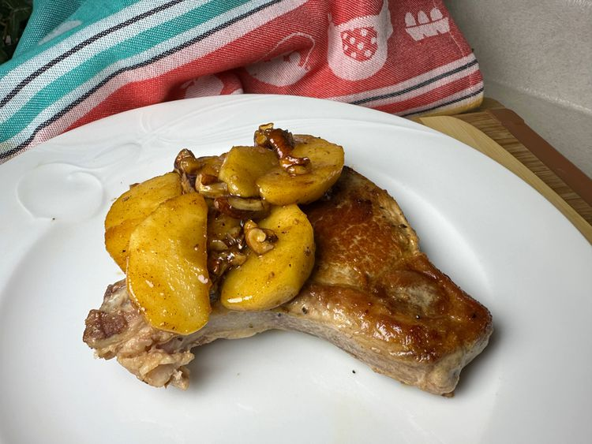

Caramel Apple Pork Chops

Caramelised apple layered on a pork chop
Ingredients
- 4 (3/4-inch) thick pork chops
- 1 teaspoon vegetable oil
- 2 tablespoons brown sugar
- 1/8 teaspoon ground cinnamon
- 1/8 teaspoon ground nutmeg
- salt and pepper to taste
- 2 tablespoons unsalted butter
- 2 medium tart apples - peeled,cored and sliced
- 3 tablespoons pecans or walnuts(optional)
Steps
- Heat a large skillet over medium heat. Brush chops lightly with oil and place on the hot pan. Cook until no longer pink in the centre. Transfer to a baking dish in a pre heated oven to keep warm.
- Stir brown sugar ,cinnamon, nutmeg, salt and pepper together in a small bowl.
- Melt butter in a skillet over medium to low heat. Stir in apples and the brown sugar mixture. Cover and cook till apples are just tender. Remove the apples and place them over the pork chops in the oven to keep warm.
- Continue to cook the sauce, until thickened slightly.
- Remove the pork chops and apples from the oven. Spoon the sauce over the top and sprinkle with the nuts
Source: allrecipes.com
Home